公开统一页 · 无 CDN · 网页演示不是 Metal 原生运行
完整效果与组件预览
这是 Stone 设计系统已有目录的统一交互页：效果预览包为准，补上转交手册里预览页没有的规范条文（原则、使用与禁止、网页适配、约束提示词、验收清单），再加糖胶水果全套（果合大作战 v12 可玩游戏、19 种水果图鉴、实现要点）。网页演示遵守源码令牌，用 Canvas 连续表面近似软胶与漆面；不能把本页当成 iOS / Metal / 触感的原样运行。触觉、陀螺仪姿态、Liquid Glass 和 metallib 只列清或给出已有真实录像、静帧。
data/tokens.json。圆角是普通 CSS 近似，不是 SwiftUI continuous。减弱动态时去掉位移和缩放，只保留短淡入。本页可直接在浏览器打开。覆盖清单已内嵌，资源使用相对路径。糖胶水果以设计系统 v12 包与本页内嵌演示为准。
令牌
全部数值来自源码，不另造色板或间距。
灰阶 Ramp 0–12 Web 等价
浅色 0 最亮到 12 最暗；深色相反。随顶部浅色/深色切换。
深色 Ramp 0 最暗 → 12 最亮：
当前页面底色即语义色 base。
语义色 Palette Web 等价
页面底卡片输入凹槽控件底开关关八个强调色 Web 等价
默认 Ember。用顶栏色点切换，组件会跟着变。Amber 的字色在浅色和深色都是 #121211。
#F2551D / #FF6B35#2F5BEA / #6B8CFF#0E9F7A / #2FCB9C#E09B00 / #FFC233#6A55D6 / #9583F5#E5484D / #FF6E73#0A8CA0 / #2DBFD3#121211 / #F4F4F2字体 TypeStyle Web 等价
本页用系统字体回落，不是 SF Pro 本体；禁止 SF Pro Rounded。callout 以实现为准（系统 callout 默认 16pt，注释曾写 15）。中文取消负字距，并加行距补偿。
136.5 显示
大标题 Large Title
标题 Title2 Semibold
标题 Headline Semibold
正文 Body，用于说明和段落。
说明 Callout（16pt 实现）。
注脚 Footnote 13 Regular。
图注 Caption2 11 Medium +0.2。
Mono 13 · 3.2808 ft
间距 Space Web 等价
仅源码枚举：x1=4 … x14=56，margin 20，行高 52，触达 44，按钮 56，输入 52。没有把组件专用尺寸提升成新的全局 Token。
x1 4 · x2 8 · x3 12 · x4 16 · x5 20 · x6 24 · x8 32 · x10 40 · x14 56
圆角 Radius Web 等价
Web 为普通圆角，无法原样使用 SwiftUI .continuous。concentric(outer, inset) = max(outer − inset, 2)。
表面层级 Web 等价
floatingGlass 不可模拟
iOS 26 glassEffect(.regular.interactive()) 无法在网页复现。下面条只用 backdrop-filter 示意“浮在内容上的控件”，需原生验证。
内容层示例。
四个弹簧 Web 等价
JS 按 response / dampingFraction 积分，不是把 response 写成 CSS 秒数。点按色块查看。减弱动态改用源码短缓动：0.10 / 0.15 / 0.20 / 0.25 秒，只做淡入，去掉位移回弹。
触感 Haptic 不可模拟
网页不能调用 Taptic Engine。以下只列源码映射，不触发震动来冒充手感。
| 事件 | 用途 | UIKit |
|---|---|---|
| tap | 主按钮提交 | Impact medium 0.7 |
| select | 分段 / 滑杆刻度 / 面板档位 | Selection |
| toggleOn | 开关打开 | Impact light 0.9 |
| toggleOff | 开关关闭 | Impact soft 0.6 |
| edge | 滑杆到达端点 | Impact rigid 0.6 |
| threshold | 越过阈值 | Impact medium 0.8 |
| reveal | 结果卡出现 | Impact soft 0.5 |
| success | 复制、保存、购买成功 | Notification success |
| warning | 可恢复问题 | Notification warning |
| error | 输入错误、购买失败 | Notification error |
文案 L10n Web 等价
资源仅 11 条，全部列出。本页不是完整运行时本地化系统。
| 键 | en | zh-Hans |
|---|---|---|
| Clear | Clear | 清除 |
| Continue | Continue | 继续 |
| Close | Close | 关闭 |
| Restore | Restore | 恢复购买 |
| Terms | Terms | 条款 |
| Privacy | Privacy | 隐私 |
| Copied | Copied | 已复制 |
| Copy result | Copy result | 复制结果 |
| On / Off | On / Off | 开 / 关 |
| Exported | Exported | 已导出 |
组件
对应 StoneGallery 里的全部组件，并展开已存在的状态，而不是只放三四个演示。
主按钮 PrimaryButton Web 等价
高度 56，圆角 14，全宽，headline。按下 0.97 缩放 + 亮度 −4%；减弱动态改为透明度 0.8。加载时文字淡出、转圈淡入。禁用为灰底灰字。
开关 .stone Web 等价
轨道 52×32，拇指 28，按下拉宽到 34。原生开/关触感不模拟。
滑杆 StoneSlider Web 等价
轨道 6，拖动加粗到 10，拇指 28，拖动缩放 1.1。到达端点的 edge 触感不可模拟。
分段 SegmentedControl Web 等价
输入框 InputField Web 等价
输入 0 触发错误与抖动（−6, 5, −3, 0，0.3s）。聚焦为 1.5 边 + 4 光晕。
列表行 ListRow / RowGroup Web 等价
无图标分隔缩进 16，有图标 56（16+28+12）。
结果卡 ResultCard Web 等价
点上方「计算」显示。揭示：淡入 + 上移 8pt + 0.96→1。复制成功文案保持 1.4s。大面积结果卡允许颗粒。
结果
137.8ft
1 米 = 3.2808 英尺
面板 stoneSheet Web 等价
compact 约 1/3（0.34）、medium 半屏、large 近全屏。网页为自绘层，不是 UIKit detent。关闭按钮视觉 30、触达 44。
空状态 EmptyState Web 等价
还没有记录
计算一次后，结果会出现在这里。
付费墙 PaywallView Web 等价
最多 3 个方案、最多 3 条权益。方案卡圆角源码为 md 14（Token xl 28 未用于方案卡）。选中缩放 0.98。价格和文案为组件结构示例。
- 去掉水印
- 解锁全部工具
- 以后的更新
恢复购买 · 条款 · 隐私
效果
对应 StoneEffectsGallery。网页用连续 SDF 表面，不是 metallib。原生要求真机查看陀螺仪和触感。
GooField 软胶团块 Web 等价
拖动团块。并集使用与 Metal 相同的多项式 smin，表面连续，不用粗线冒充胶颈。
Web SDF · 非 gooBlobs 着色器
GooMorph 液态变形 Web 等价
点按：圆钮流入圆角面板，过程带小液滴。使用 reward / glide 弹簧。
液态开关 .goo Web 等价
漆面液态按钮 Web 等价
按住并向外拖：先长出厚根细颈，再分出细丝，松手回缩；拉得过远会断裂。丝线可画出按钮外。Web 简化了原生 4 股×15 点绳索，不是 lacquerGoo。EffectHaptics 的拉伸与断裂触感不可模拟。
样式 · 色 · 状态（拖任一颗查看拉丝）
漆面头像 12 形 Web 等价
圆、方圆、胶囊、饭团、菱、团、六边、水滴、豆、五边、星、双耳。网页为 SDF 近似，不是 lacquerAvatar 着色器。表情分配与 EffectsGallery 一致。
表情 13 种 Web 等价
几何近似。精确口型、腮红和材质以原生与参考静帧为准。
漆面伙伴 6 形 Web 等价
circle、squircle、teardrop、rice、bean、capsule。
gaze-v8 整眼跟手 Web 等价
在区域内移动指针。整眼（眶）移动，不是只移瞳孔。参数：眶锚 ±0.34r / 0.08r，眶 0.115×0.1107r，眶走 0.250r / 0.240r，瞳走 0.020r，eyeScale 0.82，墨混 0.52。不要用 v6/v7。减弱动态时不跟手。对照下方六方向静帧。
Web 跟手 · 核准基线 gaze-v8 · 非 lacquerBuddyField 着色器
接触、拉伸、断裂回缩、吸合 Web 等价
拖动任一团靠近：先出现厚根细颈的连续接触面；再拉开可拉丝、过远断裂并回缩；挤在一起会吸合。不要把胶颈画成一条线。精确亲吻时间轴与口型以 kiss-v5 录像为准，本页不宣称像素级等同。
Web SDF · 对照 kiss-v5 / flow-v9 参考
糖胶水果 · 果合大作战
软胶水果全套，v12 最新版。方向：果冻 Q 弹在水果本身——深压扁、多段回弹、剪切晃动、拖拽拉伸、体转，水果之间不加元素。胶颈、拉丝、黏丝方向已作废（2026-11-16 用户定），本页不收。玩法、计分、存档保留原游戏。
水果图鉴 · 19 种 Web 等价
按进化链顺序排，小到大。等级按含糖量排（美国农业部食物数据库，每 100 克可食部总糖），半径 24 + 等级×3。西瓜与椰子同为 6.2 克，按精确值（西瓜 6.2、椰子 6.22）西瓜在前。
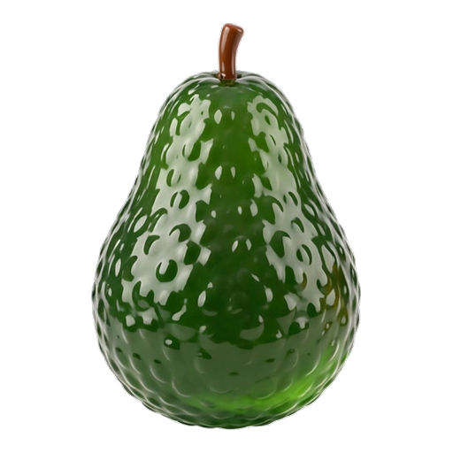
牛油果0 级糖 0.66 克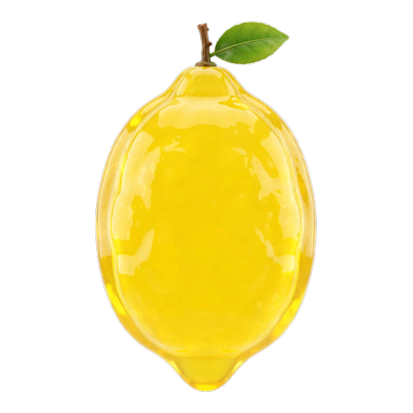
柠檬1 级糖 2.5 克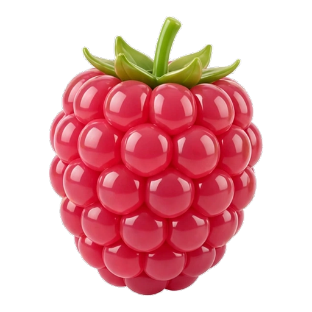
树莓2 级糖 4.4 克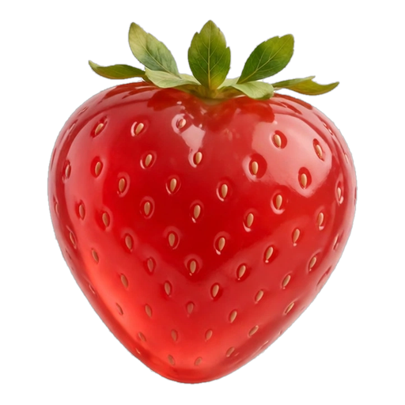
草莓3 级糖 4.9 克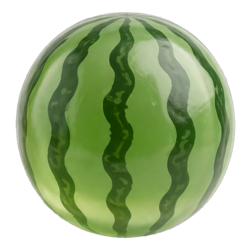
西瓜4 级糖 6.2 克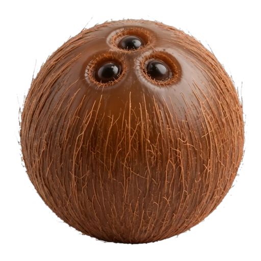
椰子5 级糖 6.2 克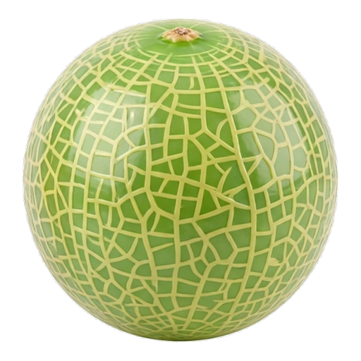
哈密瓜6 级糖 7.86 克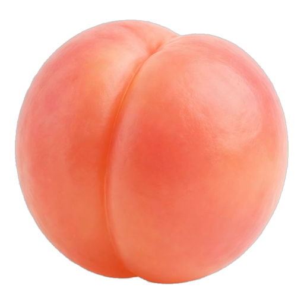
桃子7 级糖 8.4 克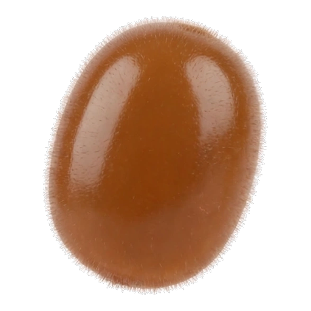
猕猴桃8 级糖 8.99 克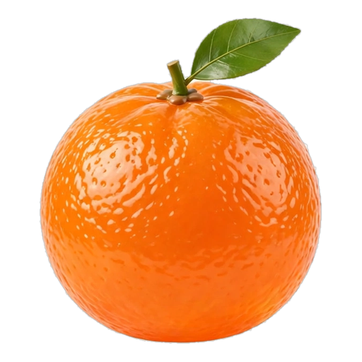
橙子9 级糖 9.4 克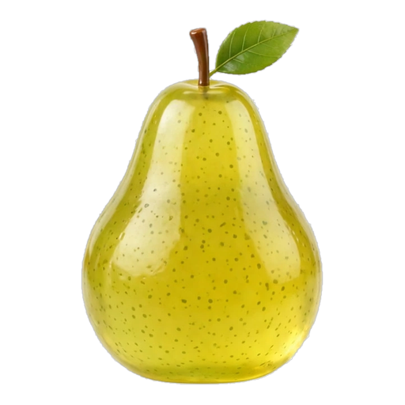
梨10 级糖 9.8 克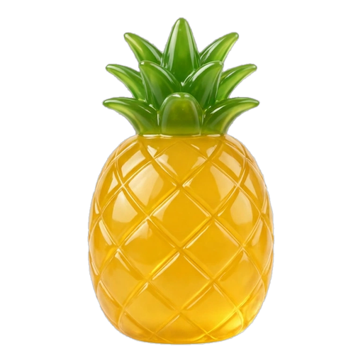
菠萝11 级糖 9.9 克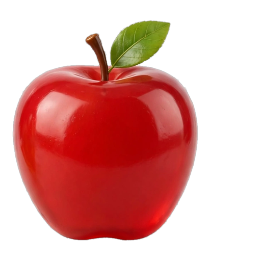
苹果12 级糖 10.4 克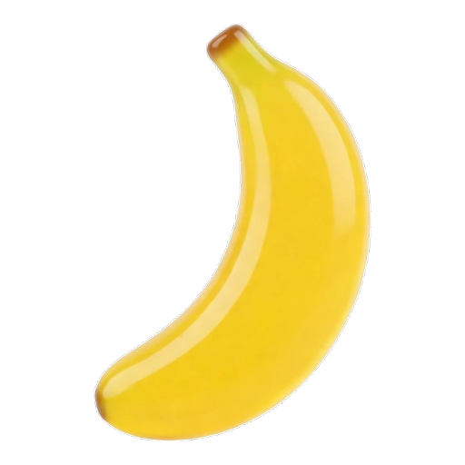
香蕉13 级糖 12.23 克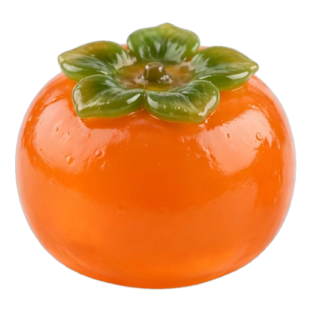
柿子14 级糖 12.5 克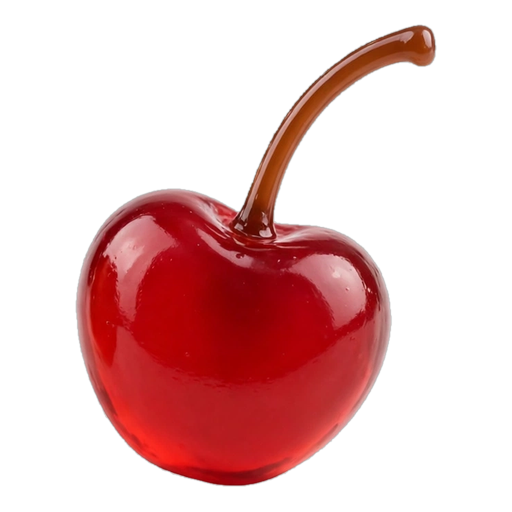
樱桃15 级糖 12.8 克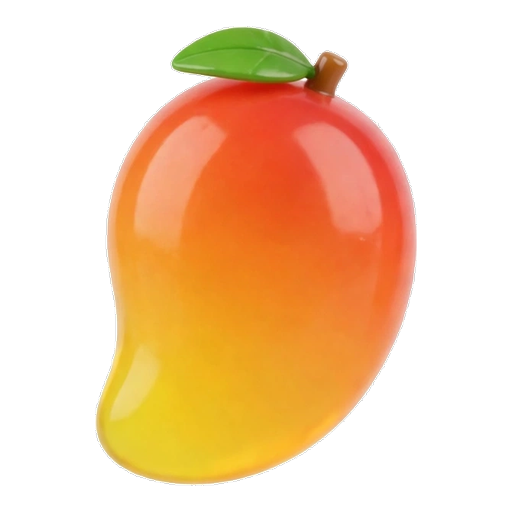
芒果16 级糖 13.66 克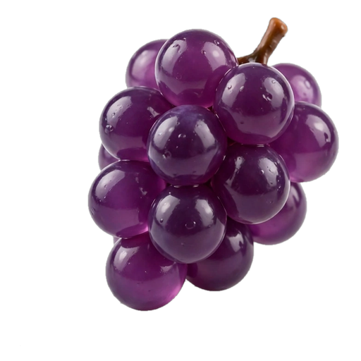
葡萄17 级糖 15.5 克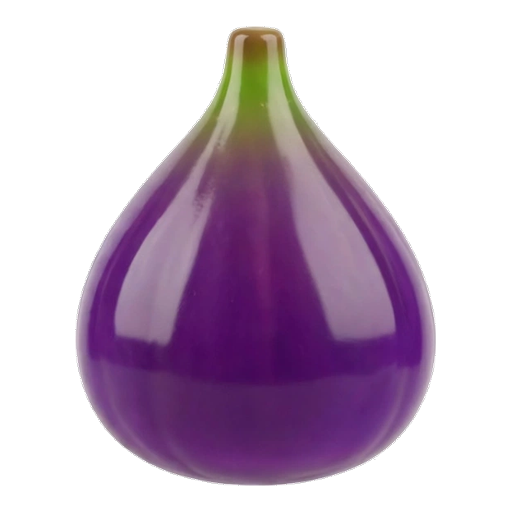
无花果18 级 · 最大糖 16.26 克带柄 12 种、无柄 7 种；带柄的柄叶是独立图，跟着果体弹抖。合成得分（目标等级+2）×10，双无花果消除 +350。
实现要点 Web 等价
- 软接触：地板与水果间用弹簧加阻尼（罚弹簧），穿透深度即物理压缩，视觉压扁 = 穿透 ÷ 半径；压扁在接触约 80 毫秒里逐渐形成，不是落地瞬间阶跃。
- 接触锚定形变：形变网格锚在接触点，果底贴地、果心下沉；接触端压满、远端不动、中部鼓出；对称拉伸（拖拽、甩出、自由晃动）以果心为锚。
- 体转（v12）：摩擦作用在接触点滑移速度上，既减滑移又生力矩。横着滑出去的落地后由滑转滚（v=ω·r 锁死），斜着撞上另一颗会翻个身，直着掉的不转。滚动阻力 6，约 1 秒停稳。抓着定住不转，甩出按抓点偏心带转。压扁轴是世界系的、体转是果子自己的，网格先转后压扁。
- 一碰就合：同种重叠超过 0.01×小直径即合，不用等压深、不用按住半秒；0.28 秒交融动画（两颗向中点收缩淡出、新果弹出），像漆液交融相互吸收，不炸、无粒子。
- 地板回弹 0.13：落地闷墩一下就停住；水果间回弹约 0.25，果堆少晃。
- 柄叶弹簧：柄叶拆成独立图，弯曲网格跟果体弹抖；果子压在柄叶上时柄往受力侧弯、被压短，拿走弹回来。弹抖系数滑杆（0 最沉稳—1 最活泼），默认沉稳。
- 防闪烁：压扁轴与锚点改目标加插值（不直接赋值）、压扁交接改插值、呼吸相位每颗出生时随机定死；余晃阶段三项跳变实测全是 0。
- 性能：静止水果整图直绘不走网格，网格降格（果体 6×6、柄叶 3×6）；落稳后一帧绘制调用从几百次降到 9 次。
- FruitGooGame 完整游戏组件已进设计系统：投放、合成、计分、结束、最高分、进化链都在 Swift 包内。转交手册「游戏规则不进设计系统」一条，已于 2026-11-16 被用户决定推翻，设计系统是唯一沉淀地。
- 验证：网页 harness 102 项全过（含 8 项转动回归）；Swift 测试 45 个。果体白线已修（逐格仿射第四角误差，自适应重叠盖住，像素验证过）。
原生参考
这些是已有的真实录像与静帧，从本机资料复制，未新录、未重做游戏。用来对照 Web 近似与原生的差别。
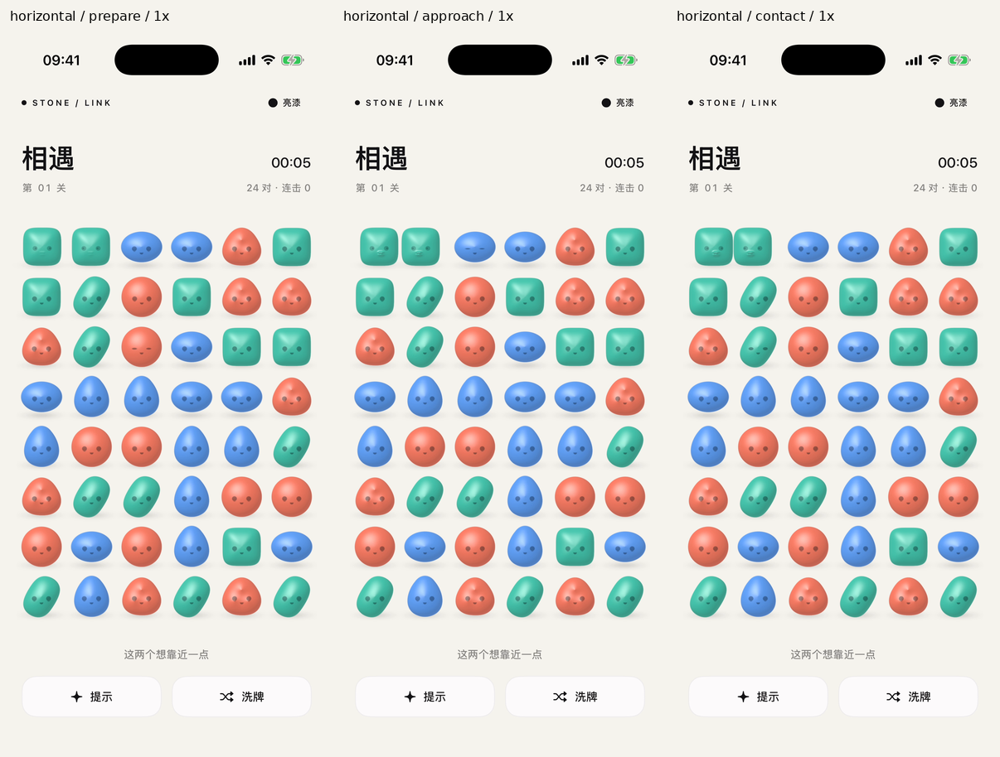
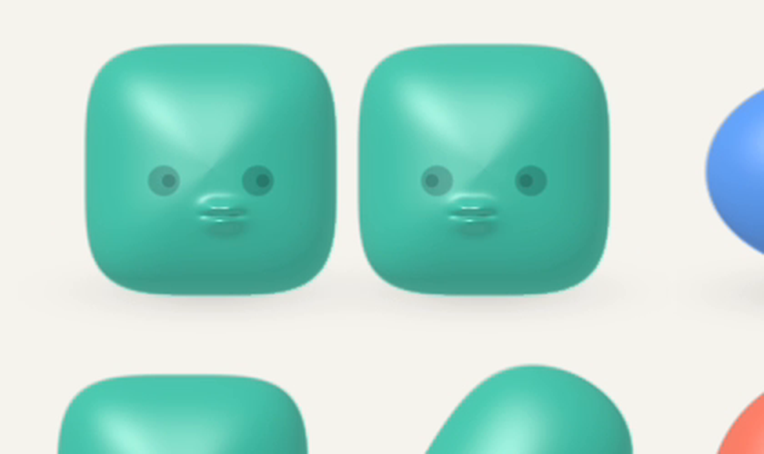
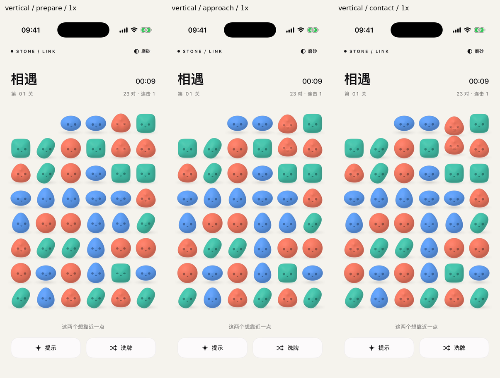
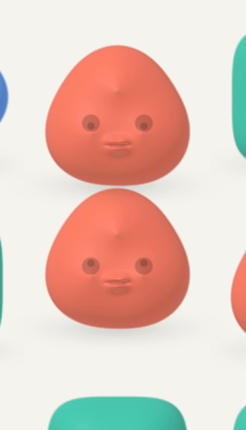
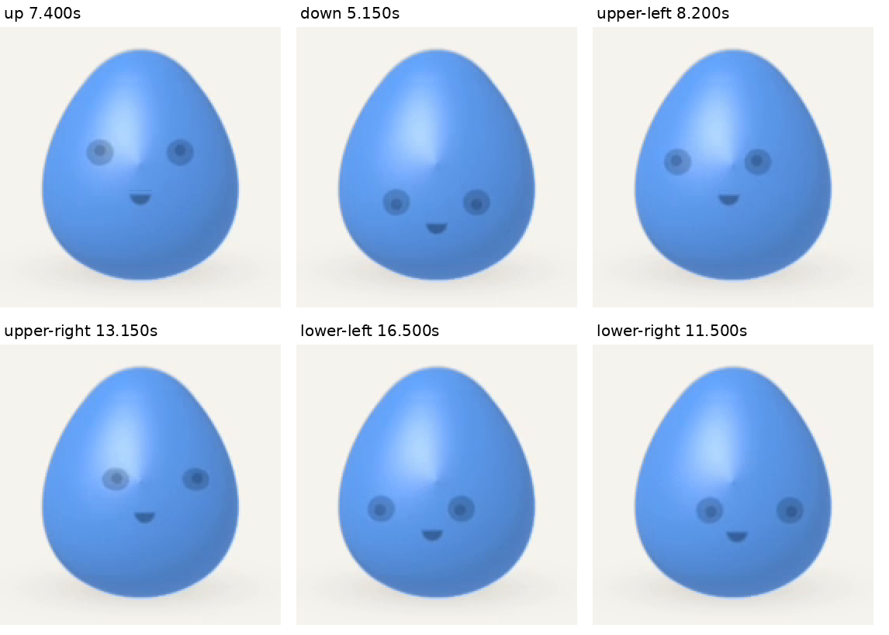
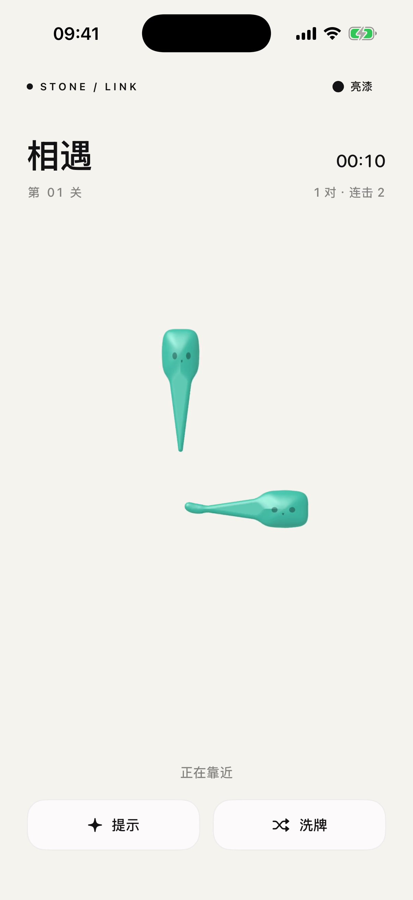
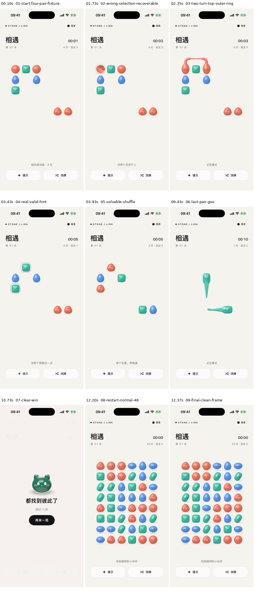
覆盖清单
设计系统目录中已盘点的全部项。三类：Web 等价、原生参考、不可模拟。不把缺项说成已实现。
| 项目 | 类型 | 来源 | 说明 |
|---|
规范补录
转交手册（STONE_AI_HANDOFF.md）里预览页没有的条文，照录进来。数值以 IstoneDesign Token 源码为准。
原则摘要 手册 §1
- 账号下所有 iOS 小工具共用同一套视觉与交互。目标：克制、高级、功能优先、零冗余；动效和触感到位，底子极简、干净、饱满，避免花杂。
- 每个 App 根视图三步：石底 → 本 App 唯一强调色槽位 → 只用本包组件和 Token，不写魔法数字。
- 强调色只标记「当前活跃的值」和「每屏一个主操作」，其他一律中性灰。
- 每屏最多 1 个签名效果 + 1 个共享效果，放在最重要的真实动作上，不做循环装饰动画。
- 不要把连连看专属形象（棋盘伙伴 / 注视 / 亲嘴）强制给所有工具——它们是可复用的漆面原语，不是全局吉祥物。
使用与禁止 手册 §10
使用：
- iOS 只用 IstoneDesign 的 Token 与组件，不写颜色、字号、间距、圆角、动画的字面量。颜色用 Palette / AppAccent，字体用 typeStyle，间距用 Space，圆角用 Radius 且 continuous。
- 动画只用四个 Motion 预设，触感只用 Haptic。强调色每屏只出现在活跃值和一个主操作上。
- 签名效果只用该 App 分配的那一个，放在最重要的动作上。导出一律用导出成功；卡片底面可用倾斜高光。
- 浅色、深色、高对比度、最大动态字体下都可读。任何一行可删而不影响使用的文字都不应存在。
禁止：
- 不加引导页、不加教程浮层、不加评分弹窗、不加装饰图。
- 不自写新的着色器特效；棋盘合批 / 吸合走包内着色器，不要在 App metallib 里再抄一份。
- 内容层不用 Liquid Glass。不用 SF Pro Rounded。中文段落不用负字距。
- 颗粒不铺在文字、按钮、输入框上。倾斜高光不加在含文字的容器、输入框、列表行或会长列表里的每一行。
- 不做循环装饰动画；签名 / 共享效果只在真实事件上播放。
- 不把连连看伙伴形象、注视棋盘、亲嘴动画套到未分配该效果的工具上。
- 生产 UI 不显示 DEBUG 注视标记或录制器。漆面按钮丝线会画到按钮外 96pt，父视图不要裁剪；按钮放在不滚动的位置（底部操作区）。
- 模拟器没有陀螺仪和触感，相关验收必须用真机（iOS）。
一条已改：手册原写「游戏规则不进设计系统」，2026-11-16 用户已推翻——FruitGooGame 完整游戏组件现已进设计系统，见上方糖胶水果一节。
特效统一降级：减弱动态或效果总开关关闭时，无形变、无丝线、无倾斜，只保留淡入淡出和普通触感；倾斜高光在无陀螺仪时停在默认位置；静止后降低开销，同屏 GPU 效果区域 ≤ 2 处。
网页适配映射 手册 §12
把 Token 翻译到 Web 的建议，供在 CSS / JS 中重实现。它不是可安装的组件库，也不能替代 IstoneDesign。弹簧不是 CSS 秒数：response 0.20 / 0.32 / 0.45 / 0.55 不能当作 transition-duration；Web 要近似应用弹簧物理（或明确标注为非等价的缓动近似），减弱动态下改用 0.10 / 0.15 / 0.20 / 0.25s 淡入淡出，去掉位移与缩放。
/* 映射建议，不是完整组件库。请同时实现深色与高对比。 */
:root {
--stone-base: #F7F7F5;
--stone-raised: #FFFFFF;
--stone-sunken: #EFEFEC;
--stone-fill: #E8E8E4;
--stone-fill-strong: #D6D6D1;
--stone-hairline: rgba(0, 0, 0, 0.08);
--stone-line-strong: rgba(0, 0, 0, 0.16);
--stone-text: #121211;
--stone-text-secondary: #6B6B67;
--stone-text-tertiary: #A3A39E;
--stone-ink: #121211;
--stone-on-ink: #FFFFFF;
--stone-success: #1F9D55;
--stone-warning: #C77C02;
--stone-danger: #D93036;
--stone-thumb: #FFFFFF;
--space-1: 4px; --space-2: 8px; --space-3: 12px; --space-4: 16px;
--space-5: 20px; --space-6: 24px; --space-8: 32px; --space-10: 40px; --space-14: 56px;
--space-margin: 20px;
--hit-target: 44px;
--radius-xs: 6px; --radius-sm: 10px; --radius-md: 14px;
--radius-lg: 20px; --radius-xl: 28px;
--hairline: 1px; /* 更准确：1 / devicePixelRatio px */
font-family: -apple-system, BlinkMacSystemFont, "SF Pro Text", "SF Pro Display",
"PingFang SC", "Noto Sans CJK SC", sans-serif;
}
@media (prefers-color-scheme: dark) {
:root {
--stone-base: #0A0A0B;
--stone-raised: #161618;
--stone-sunken: #1C1C1F;
--stone-fill: #252528;
--stone-fill-strong: #3A3A3E;
--stone-hairline: rgba(255, 255, 255, 0.10);
--stone-line-strong: rgba(255, 255, 255, 0.20);
--stone-text: #F4F4F2;
--stone-text-secondary: #9C9C9F;
--stone-text-tertiary: #5E5E62;
--stone-ink: #F4F4F2;
--stone-on-ink: #0A0A0B;
--stone-success: #3DD68C;
--stone-warning: #F5B83D;
--stone-danger: #FF5C61;
}
}圆角优先模拟连续曲率（如 corner-shape / superellipse），普通 border-radius 只是近似。Web 需自行重做、且不可声称“已附带 Swift 实现”的部分：Metal 漆面 / 墨波 / 倾斜高光、UIKit / Core Haptics、Liquid Glass、SwiftUI 弹簧与 matchedGeometry。
约束提示词 手册 §13 · 全文照录
可直接复制给其他 AI。数值以 IstoneDesign Token 源码为准，不要臆造。
你在实现 istone / Stone 风格界面。必须遵守 Stone 视觉规范（见 STONE_AI_HANDOFF.md，数值以 IstoneDesign Token 源码为准，不要臆造）。
原则：极简克制、干净饱满、功能优先、零冗余。不要花杂，不要装饰图、引导页、教程浮层、评分弹窗。
颜色只用规范里的 Palette 与 8 个 AppAccent 槽位（浅/深必须成对实现）。每个产品只用一个强调色；每屏强调色只出现在「当前活跃值」和「一个主操作」上，其余中性灰。Amber 上的文字始终是 #121211。不要把漆面材料色当成 App 强调色。
字体：SF Pro + PingFang SC，等宽用 SF Mono / ui-monospace。禁止 SF Pro Rounded。中文不要负字距，正文需中文行距补偿。字号走 typeStyle 阶梯，不要随意写字号。
间距走 4pt 网格（4/8/12/16/20/24/32/40/56，页边 20）。圆角 6/10/14/20/28，连续曲率，嵌套用同心（外圆角−内边距，最小 2）。发丝线 1 物理像素。点击区 ≥ 44。主按钮高 56，输入框/列表行高 52。
表面：页面底 #F7F7F5 / #0A0A0B + 可选细颗粒（只铺大底和主结果卡，不铺文字/按钮/输入框）。卡片用 raised，输入用 sunken。浮层玻璃只用于浮在内容上的控件，内容层禁止。
动效只用四个弹簧预设 press/snap/glide/reward（response 0.20/0.32/0.45/0.55，damping 0.90/0.82/1.00/0.70）。这些是弹簧参数，不是 CSS 秒数。reward 每屏最多一次。减弱动态时去掉位移和缩放，只保留 0.10/0.15/0.20/0.25s 淡入淡出。
每屏最多 1 个签名效果 + 1 个共享效果，只在真实事件上播放，不做循环装饰。不要把连连看的伙伴 / 注视 / 亲嘴形象强制用到所有工具。若实现注视，必须按 gaze-v8：固定正面、整眼平移（socketTravel 0.250r/0.240r，pupilTravel 0.020r）、低对比、嘴与身体连续、纵向正面嘟嘴轻靠、不翻脸。
iOS 可直接复用 IstoneDesign Swift package。Web 必须按同一 Token 重实现视觉，不能声称 Swift / Metal / 触感 / Liquid Glass 特效可直接使用。现有 style.css 只是不完整的站点映射，不是 CSS 组件库。
浅色、深色、高对比、大字号下都要可读。先对照 STONE_AI_HANDOFF.md 的验收清单再交付。验收清单 手册 §14
- 浅色、深色、高对比度、最大动态字体下都可读
- 开启「减弱动态效果」后没有缩放和位移，只用 0.10–0.25s 淡入淡出（对应四个预设的精确时长）
- 每屏强调色不超过两处（活跃值 + 一个主操作）
- 所有点击区域 ≥ 44pt
- 没有任何一行文字可以删掉而不影响使用
- 未写颜色 / 字号 / 间距 / 圆角 / 动画字面量（iOS 走 Token；Web 走与 Token 一一对应的变量，而不是随意新值）
- 圆角为连续曲率；嵌套同心
- 发丝线为 1 物理像素；深色 raised 无投影、有顶部高光线
- 颗粒只出现在大底和主结果卡
- 内容层无 Liquid Glass；无引导页 / 教程浮层 / 评分弹窗 / 装饰图
- 每屏最多 1 个签名效果 + 1 个共享效果；无循环装饰动画
- 未把连连看伙伴形象强制用到无关工具
- 若有注视 / 亲嘴：符合 gaze-v8（固定正面整眼平移、低对比、嘴身连续、纵向嘟嘴轻靠、不翻脸）；生产 UI 无 DEBUG 标记
- reward 每屏最多一次；导出用导出成功（或 Web 上的等价一次反馈），倾斜高光只加在底面
- Web 实现未声称 Swift / Metal 特效可直接使用；弹簧未被误写成 CSS 秒数
- iOS 触感与倾斜验收用真机（模拟器无陀螺仪和触感）
Stone Design 统一效果页 · 网页演示不是 Metal / SwiftUI 原生运行